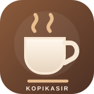

HARI INI
Mulai pesanan.
Pilih menu, lalu proses pembayaran.
K
Transaksi hari ini0
Penjualan hari iniRp0
MENU
Pilih produk
⌕

KopiKasirPOINT OF SALEHARI INI
Pilih menu, lalu proses pembayaran.
MENU
PESANAN AKTIF
LANGKAH TERAKHIR
Metode pembayaran
Rincian transaksi KopiKasir.
CATATAN PENJUALAN
PENGELOLAAN DATA
EDIT FOTO PRODUK
Geser foto dengan satu jari. Cubit dengan dua jari untuk zoom. Bingkai putih adalah area hasil potongan.
LAPORAN USAHA
Cadangan lokal disimpan di penyimpanan aplikasi dan Documents/KopiKasir/data/backup.json. Android dapat memulihkan salinan penyimpanan aplikasi secara otomatis melalui fitur pencadangan Google jika pencadangan perangkat aktif dan akun/perangkat mendukungnya. Folder Documents menjadi cadangan tambahan; jangan hapus folder ini. Foto produk dan bukti pembayaran ikut disertakan.
Laporan tersimpan di perangkat ini. Laba bersih merupakan estimasi dari penjualan dikurangi HPP dan biaya operasional. Transaksi lama mungkin belum memiliki data modal.
RINGKASAN USAHA
PREFERENSI APLIKASI
Aplikasi membuat cadangan internal untuk pemulihan Android dan salinan tambahan di Documents/KopiKasir. Pemulihan otomatis bergantung pada fitur pencadangan Android/Google yang aktif; simpan juga file cadangan manual secara berkala.
KopiKasir · POS untuk usaha kopi